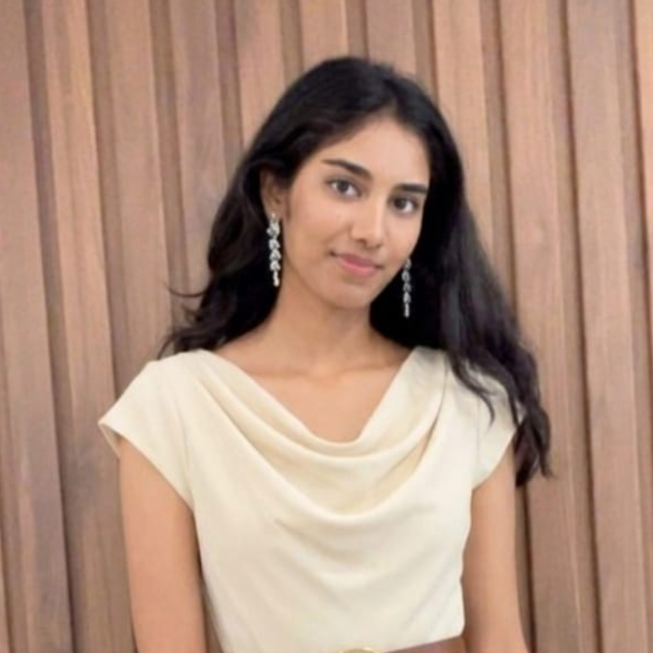
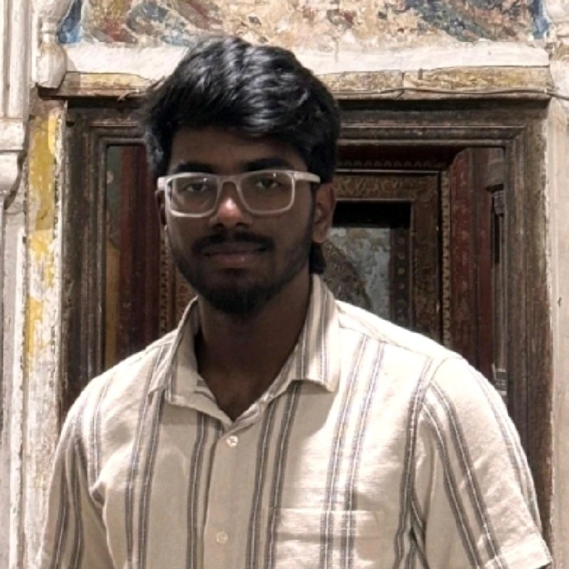

Meet Team 13
The researchers and developers behind the multi-paradigm IMDB Sentiment Analysis and Rating Prediction project.
 AK
AK
Led overall project orchestration, experimental scoping, and report formulation. Spearheaded the fine-tuning of bert-base-uncased Transformers for both binary sentiment classification (achieving state-of-the-art 94.16% accuracy) and continuous rating regression (0.9897 MAE). Oversaw hyperparameter tuning, AdamW optimization, and mixed-precision training.

PPArchitected the end-to-end data extraction pipelines traversing 100,000 raw text files across complex directory hierarchies into structured pandas DataFrames. Designed regex HTML tag stripping (cleaning 58%+ contaminated reviews), HTML entity decoding, whitespace normalization, and deduplication to eliminate data leakage between splits. Generated comparative EDA distribution plots.
 SK
SK
Developed and evaluated traditional statistical machine learning baselines. Implemented Multinomial Naive Bayes (84.20% accuracy) and engineered TF-IDF n-gram vectorization pipelines. Configured L2-regularized Logistic Regression (88.22% accuracy), proving that capturing bigrams (e.g., "highly recommend") creates a formidable linear decision boundary for sentiment analysis.

HKDesigned the Truncated SVD (Latent Semantic Analysis) pipeline that successfully compressed the 80,000+ sparse TF-IDF feature space into 2 Principal Components while preserving 85% of latent variance. Implemented K-Means clustering (using the Elbow method to confirm optimal $K=2$) and Gaussian Mixture Models (GMM) to calculate continuous posterior probabilities for mixed-opinion reviews.
 TR
TR
Engineered PyTorch neural sequence architectures, developing the 2-layer Bidirectional LSTM for binary sentiment classification (87.78% accuracy) and the continuous LSTM regressor (1.5477 MAE). Conducted regression residual error analyses and built the unified, responsive presentation web application dashboard showcasing the project deliverables.
Project Workload & Responsibility Matrix
Summary of collaborative responsibilities across dataset preparation, model engineering, evaluation, and website deployment:
| Team Member | Primary Domain | Key Deliverables | Phase Involvement |
|---|---|---|---|
| Anjali Kumari | Deep Learning & Transformers | BERT Classification & Regression fine-tuning, loss adaptation, project leadership | Architecture, Modeling, Final Report |
| Paripelly Pritika | Data Engineering & Preprocessing | Dataset extraction from 100k raw files, HTML regex stripping, deduplication, EDA plots | Data Pipeline, Cleaning, EDA |
| Sucharitha Kamera | Statistical Baselines | Multinomial Naive Bayes, TF-IDF n-gram vectorization, Logistic Regression ($C=1.0$) | Feature Engineering, Statistical Modeling |
| Harshith Konda | Unsupervised Learning & SVD | Truncated SVD 2D projection, K-Means elbow analysis, GMM probabilistic soft-clustering | Unsupervised Modeling, Latent Analysis |
| Tangirala Dhanunjaya Rao | Neural Sequences & Web Dashboard | BiLSTM sequence networks, regression residual analysis, responsive website dashboard | Deep Learning, Testing, Web Deployment |